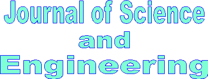

-
Prodi
Programme
S.T.(Geological Engineering)
Program Studi S1 Teknik Geologi UMKT merupakan pusat pendidikan Sarjana Teknik Geologi dengan ciri khas Islami yang bertujuan menyiapkan sarjana Teknik Geologi yang memilki keahlian dalam merencanakan, melaksanakan, menganalisis dan melaporkan hasil kegiatan evaluasi potensi kegeologian kawasan, baik potensi positif maupun potensi negatif di suatu kawasan serta upaya rekayasa geologi termasuk perencanaan wilayah untuk optimasi potensi sumber daya geologi dan mitigasi potensi negatif berupa kebencanaan alam atau lingkungan dengan tetap memenuhi kaidah keselamatan kerja dan perlindungan lingkungan.
Potensi positif dapat berupa potensi bahan tambang, hidrokarbon, material konstruksi, sumber air, geowisata dan lainnya. Potensi negatif umumnya berkaitan dengan kebencanaan alam kawasan maupun hal lain yang berpotensi bencana ketika suatu aktifitas akan dilakukan di suatu kawasan dan mengubah kondisi alami kawasan.
Selanjutnya, dalam mendukung visi Universitas Muhammadiyah Kalimantan Timur sebagai universitas dengan keunggulan dalam bidang teknologi informasi, lulusan program Teknik Geologi ini juga dibekali dengan kemampuan mengoperasikan program komputer terkini untuk pemecahan problematika bidang Teknik Geologi.
Ada empat peminatan dalam program Teknik Geologi, meliputi (1) mitigasi dan konservasi lingkungan, (2) geowisata, (3) sumber daya energi, (4) sumber daya mineral.
Setelah menyelesaikan program Teknik Geologi, lulusan dapat bekerja di pemerintahan, sektor swasta, maupun independen baik bidang wirausaha maupun konsultan.
Pada sektor pemerintah, di tingkat pusat, lulusan Teknik Geologi beraktifitas antara lain pada Kementerian Energi dan Sumberdaya Mineral, Kementerian Lingkungan Hidup dan Kehutanan, Kementerian Pendidikan dan Kebudayaan, Badan Meteorologi, Klimatologi, dan Geofisika, Badan Nasional Penanggulangan Bencana, Badan Perencanaan Pembangunan Nasional. Pada tingkat daerah, di organisasi perangkat daerah tingkat propinsi, kabupaten/ kota berupa dinas yang linear dengan pemerintah pusat.
Pada sektor swasta, lulusan Teknik Geologi beraktifitas antara lain pada bidang pertambangan energi (migas, panas bumi, batubara, energi baru terbarukan), pertambangan mineral (emas, nikel, bauksit, unsur tanah jarang dan ragam lainnya), pertambangan material konstruksi (batugamping, granit, andesit, pasir batu dan ragam lainnya), jasa konstruksi (jalan, bangunan, bendungan dan lainnya), jurnalis di media massa, dan lainnya.
Pada sektor mandiri, lulusan Teknik Geologi beraktifitas antara lain pada usaha jasa pengeboran eksplorasi dan geoteknik, penyewaan alat berat maupun penunjang jasa pertambangan, jasa perjalanan dan wisata alam dan budaya, konsultan geologi/ geoteknik/ lingkungan, penulis dan lainnya.
Gelar yang diperoleh bagi yang telah menyelesaikan program Teknik Geologi adalah Sarjana Teknik (S.T.).
Program Studi Teknik Geologi pada tahun 2037, adalah “menjadi pusat unggulan bidang teknik geologi berlandaskan nilai-nilai keislaman, yang berperan aktif terhadap penyelesaian masalah masyarakat dan lingkungan dengan didukung oleh teknologi informasi”.
Misi:
Mewujudkan penyelenggaraan pendidikan berkualitas di bidang Teknik Geologi berdasarkan nilai-nilai keislaman, sesuai kompetensi akademik dalam rangka menyiapkan tenaga profesional untuk kepentingan masyarakat dan bangsa.
Menyelenggarakan kegiatan penelitian dalam bidang Teknik Geologi dengan mempertimbangkan potensi kearifan lokal yang menghasilkan inovasi dan memberikan dampak positif bagi masyarakat dan lingkungan.
Menyelenggarakan pelayanan kepada masyarakat sebagai upaya penerapan dan pengembangan bidang Teknik Geologi untuk membantu menyelesaikan permasalahan yang ada di masyarakat dan lingkungan.
Mengembangkan program kerja sama dengan instansi pemerintah dan swasta serta asosiasi profesi baik di tingkat regional, nasional dan internasional untuk memantapkan eksistensi S1 Teknik Geologi UMKT.
Tujuan
Menghasilkan lulusan yang unggul dan berkarakter islami serta kompeten di bidang Teknik Geologi yang mampu menerapkan dan mengembangkan bidang sains dan teknologi secara profesional.
Menjadi pusat penelitian yang unggul dalam bidang Teknik Geologi secara berkesinambungan dengan menghasilkan inovasi yang bermanfaat bagi pembangunan masyarakat dan lingkungan sesuai dengan potensi kearifan lokal.
Menjadi rujukan masyarakat dalam mengatasi permasalahan dan penerapan bidang Teknik Geologi yang sesuai, efektif dan memberikan dampak positif bagi masyarakat dan lingkungan.
Mempunyai hubungan kerjasama dengan masyarakat formal dan informal dalam lingkup regional, nasional dan internasional untuk penerapan dan pengembangan bidang Teknik Geologi yang memperkuat eksistensi Fakultas Sains dan Teknologi.
Head of Programme
Ir. Fajar Alam, S.T., M.Ling
Entry Requirements:
Untuk dapat mendaftar pada program studi S1 Teknik Geologi:
Tidak Buta Warna
Lulusan Sekolah Menengah Atas/ Sekolah Menengah Kejuruan/ Madrasah Aliyah/ sederajat.
mendaftar melalui pmb.umkt.ac.id
Duration of Study:
Untuk menyelesaikan program ini, mahasiswa diwajibkan menempuh mata kuliah sebanyak 144 SKS dengan jangka waktu program selama 8 semester atau 4 tahun.
Contact Us
You may contact us by sending an email, or feel free to use our online inquiry systemContact Us
Phone: +62-541-748511
Email: fst@umkt.ac.id
Connect with Us
We're on Social Networks. Follow us & get in touch.

International Journal
